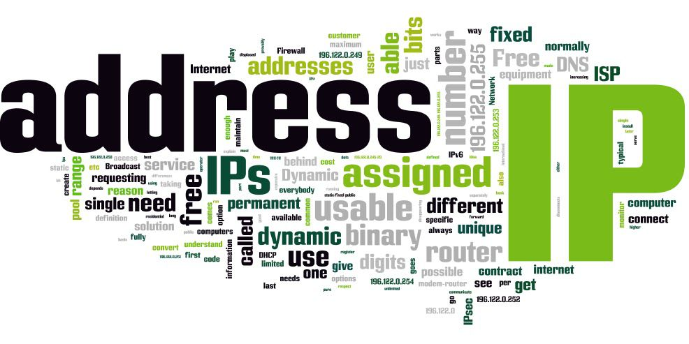
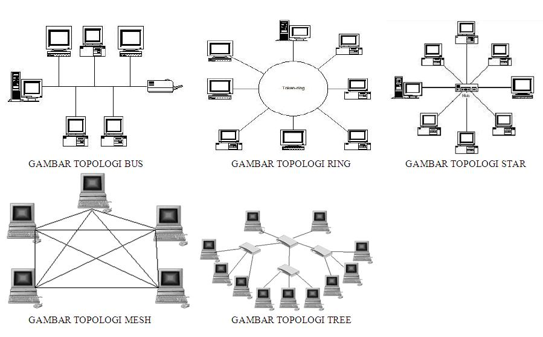
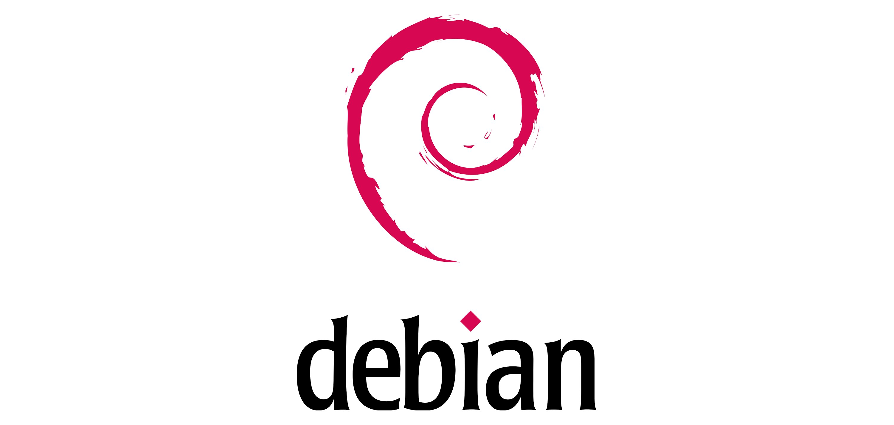

Mengenal IP Address

Internet adalah seluruh jaringan komputer yang saling terhubung di dunia. Agar dapat berkomunikasi dan bertukar data, antar komputer ini membutuhkan alamat sebagai identitas pengenal. Alamat itulah yang secara global disebut dengan IP Address..
Pada kesempatan kali ini MeretasDC akan berbagi pengetahuan tentang Pengertian IP Address. Harapannya setelah belajar dari artikel ini anda dapat mengerti seluk beluk IP Address sehingga memahami betul cara setting IP..
Pengertian IP Address (Internet Protocol Address) IP Address adalah alamat atau identitas numerik yang diberikan kepada sebuah perangkat komputer agar komputer tersebut dapat berkomunikasi dengan komputer lain.. ( Download Ebook )
Topologi jaringan

Topologi jaringan adalah, hal yang menjelaskan hubungan geometris antara unsur-unsur dasar penyusun jaringan, yaitu node, link, dan station. Topologi jaringan dapat dibagi menjadi 6 kategori utama seperti di bawah ini. Topologi bintang Topologi cincin Topologi bus Topologi jala Topologi pohon Topologi linier..
Topologi jaringan komputer adalah suatu cara menghubungkan komputer satu dengan komputer lainnya sehingga membentuk sebuah jaringan. Dalam satu jaringan komputer, jenis topologi yang dipilih akan mempengaruhi kecepatan komunikasi. untuk itu, perlu dicermati Keuntungan dan kerugian dan kelebihan serta kelemahan masing masing topologi berdasarkan karakteristiknya..
Misalkan begini, jika anda hanya ingin membuat jaringan yang sangat sederhana, mungkin topologi Bus bisa menjadi pilihan anda, namun jika anda ingin membuat jaringan yang sedang atau besar, anda harus memilih jenis topologi yang lain karena topologi Bus sangat tidak disarankan. Langsung saja, berikut pengertian topologi jaringan komputer beserta jenis-jenis, kelebihan dan kekurangannya : ( Download Ebook )
Apa itu Debian ?

Debian adalah sistem operasi komputer yang tersusun dari paket-paket perangkat lunak yang dirilis sebagai perangkat lunak bebas dan terbuka dengan lisensi mayoritas GNU General Public License dan lisensi perangkat lunak bebas lainnya. Debian GNU/Linux memuat perkakas sistem operasi GNU dan kernel Linux merupakan distribusi Linux yang popmuler dan berpengaruh. Debian didistribusikan dengan akses ke repositori dengan ribuan paket perangkat lunak yang siap untuk instalasi dan digunakan..
Debian terkenal dengan sikap tegas pada filosofi dari Unix dan perangkat lunak bebas. Debian dapat digunakan pada beragam perangkat keras, mulai dari komputer jinjing dan desktop hingga telepon dan server. Debian fokus pada kestabilan dan keamanan. Debian banyak digunakan sebagai basis dari banyak distribusi GNU/Linux lainnya..
Sistem operasi Debian merupakan gabungan dari perangkat lunak yang dikembangkan dengan lisensi GNU, dan utamanya menggunakan kernel Linux, sehingga populer dengan nama Debian GNU/Linux. Sistem operasi Debian yang menggunakan kernel Linux merupakan salah satu distro Linux yang populer dengan kestabilannya. Dengan memperhitungkan distro berbasis Debian, seperti Ubuntu, Xubuntu, Knoppix, Mint, dan sebagainya, maka Debian merupakan distro Linux yang paling banyak digunakan di dunia.. ( Download Ebook )